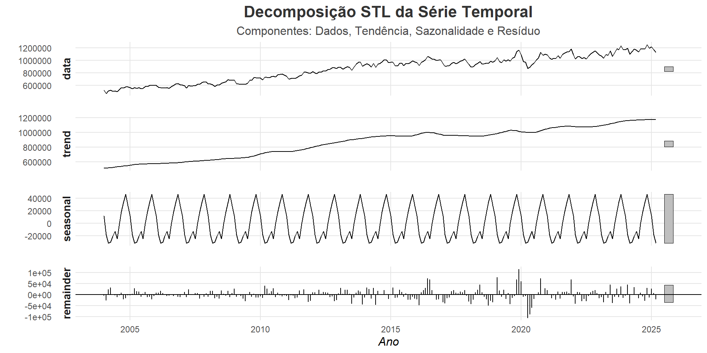
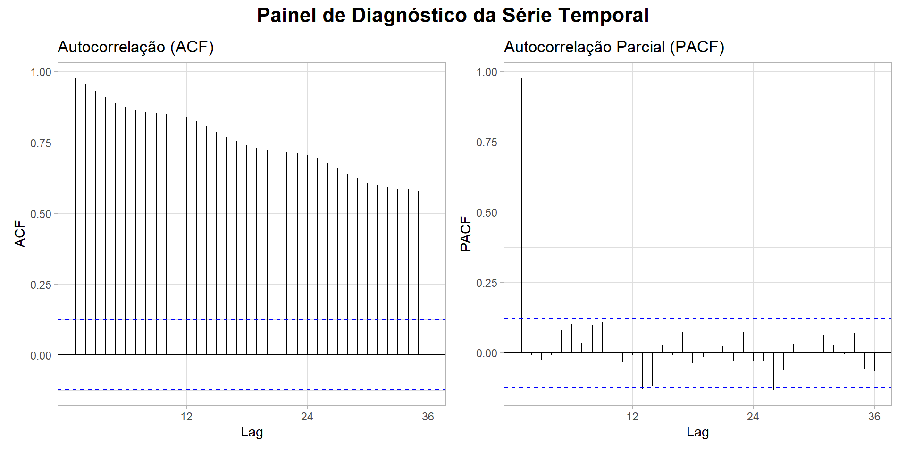

Ljung-Box test
data: Residuals from ETS(M,Ad,M)
Q* = 33.468, df = 24, p-value = 0.09457
Model df: 0. Total lags used: 24NULLCC0308 - 2025 | Julho 2025
Slides:thalisreboucas.github.io/Amostragem_Regressao_DuasFases/#/
Resumo Geral
Motivo da Escolha da Série
Apresentação da Série
Análises Primárias da série e Ajustes
Estimação dos Modelos de Série Temporal
Método de Suavização Exponencial
Metodologia Box-Jenkins
Análise de Intervenções
Conclusão
Conclusão das análises e modelos
Referências
Por que Análisar ?
Identificar padrões e tendências no consumo energético.
Apoiar políticas públicas para eficiência energética.
Entender como fatores como o cresimento da população e sazonalidade influenciam o consumo.
É uma série do EPE(Empresa de Pesquisa Energética) do Ministério de Minas e Energia (MME).
É um dado público disponível desde de 2004 de todos os estados e tipo de consumo neste link.
Neste caso, vou me restringir a análisar apenas o consumo do Ceará na parte de consumo de energia elétrica na rede (MWh) de Sistema Simples.
A série começa em janeiro de 2004 e vai até março de 2025,com isso tem cerca de 255 observações,vamos olhar o gráfico da série:
Fazendo o gráfico box-plot separados por mês,quadrimestre e ano.
Percebemos um aumento nos últimos meses do ano e valores de outliers em alguns anos.
Fazendo a divisão da série em teste e treino
Será feita um divisão na série em teste e treino, onde:
A série de treino vai até o final do ano de 2022
A série de teste começa do ano de 2023 até março de 2025
Assim sendo um divisão de 27 observações a serem prevista nos teste dos modelos
# A série começa em Janeiro de 2004
ts_ceara <- ts(ceara_data$consumo_gwh, start = c(2004, 1), frequency = 12)
# 2. Criar o conjunto de TREINO usando a função window()
treino <- window(ts_ceara, end = c(2022, 12))
# 3. Criar o conjunto de TESTE usando a função window()
teste <- window(ts_ceara, start = c(2023, 1), end = c(2025, 3))Podemos decompor a serie para ver a sazonalidade e estacionáridade,
Percebe-se um tendência práticamente linear cresente e uma série serrote, vamos olhar os lags para ver se tem tendência.
Análisando os lags da série:
Temos um forte evidência do modelo ser um autoregressivo de ordem 1 ou 2 e que a parte de médias móveis precisa tem um tratamento para aparecer, mesmo que no limte um sazonalidade no lag 12 ~ 14.
Análisando os dados da Série da primeira diferança:
temos uma melhora da série e o teste do Dickey-Fuller deu que a série é estacionaria
Análisando os dados da Série da primeira diferança normal e uma sazonal:
Passo a passo:
Esta função testa diferentes combinações de componentes de Erro (E), Tendência (T) e Sazonalidade (S), selecionando o modelo que minimiza um critério de informação, como o AIC (Critério de Informação de Akaike).
O modelo é ajustado apenas com o conjunto de treino, será selecionado apenas o que tiver o melhor AIC definido pela a função do ETS() do R.
Fazendo a utilização da chamada do modelo temos:
modelo_ets <- ets(treino)
| Componente | Tipo | Significado |
|---|---|---|
| Erro (E) | M: Multiplicativo | A variabilidade aumenta com o nível da série |
| Tendência (T) | Ad: Aditiva Damping | Tendência aditiva com amortecimento (freia ao longo do tempo) |
| Sazonalidade (S) | M: Multiplicativa | Sazonalidade proporcional ao nível da série |
\[\begin{align*} \textbf{Previsão:} \quad \hat{y}_{t+h} &= (l_t + \phi^h b_t) \cdot s_{t+h-m(k+1)} \\[1em] \textbf{Atualização do nível:} \quad l_t &= \alpha \cdot \frac{y_t}{s_{t-m}} + (1 - \alpha)(l_{t-1} + \phi b_{t-1}) \\[1em] \textbf{Atualização da tendência:} \quad b_t &= \beta \cdot (l_t - l_{t-1}) + (1 - \beta) \cdot \phi b_{t-1} \\[1em] \textbf{Atualização da sazonalidade:} \quad s_t &= \gamma \cdot \frac{y_t}{l_t} + (1 - \gamma) \cdot s_{t-m} \end{align*}\]
summary(modelo_ets)
Modelo selecionado pelo melhor AIC
Alpha (nível): \(\alpha = 0,7001\)
Beta (tendência): \(\beta = 0,0038\)
Gamma (sazonalidade): \(\gamma = 0,0001\)
Damping: \(\phi = 0,9787\)
Nível inicial: \(l_0 = 506720,43\)
Tendência inicial: \(b_0 = 3288,48\)
Desvio Padrão dos erros: \(0,0313\)
AIC: \(5878,418\)
Sazonalidade inicial: \(s_1 = 1,033, \ldots, s_{12} = 1,0149\)
\[\begin{align*} \hat{y}_{t+h} &= \left( 506720{,}43 + 0{,}9787^h \cdot 3288{,}48 \right) \cdot s_{t+h-12(k+1)} \\ l_t &= 0{,}7001 \cdot \frac{y_t}{s_{t-12}} + (1 - 0{,}7001)(l_{t-1} + 0{,}9787 \cdot b_{t-1}) \\ b_t &= 0{,}0038 \cdot (l_t - l_{t-1}) + (1 - 0{,}0038) \cdot 0{,}9787 \cdot b_{t-1} \\ s_t &= 0{,}0001 \cdot \frac{y_t}{l_t} + (1 - 0{,}0001) \cdot s_{t-12} \end{align*}\]
Ljung-Box test
data: Residuals from ETS(M,Ad,M)
Q* = 33.468, df = 24, p-value = 0.09457
Model df: 0. Total lags used: 24NULLprint(acuracia_ets) ME RMSE MAE MPE MAPE MASE
Training set 2256.726 26608.53 19550.13 0.2166755 2.290358 0.4268799
Test set 56980.434 68775.69 59854.76 4.8439823 5.115651 1.3069370
ACF1 Theil's U
Training set 0.06585039 NA
Test set 0.25875513 1.389201O modelo apresenta um desempenho ruim no conjunto de teste. Embora tenha se ajustado razoavelmente bem aos dados de treinamento, ele não conseguiu generalizar essa performance para os dados futuros (o conjunto de teste).
# --- TÓPICO 4: METODOLOGIA DE BOX-JENKINS (ARIMA) ---
# 4.1. Análise de Estacionariedade no Treino [cite: 23]
# Teste Augmented Dickey-Fuller (ADF)
# H0: a série não é estacionária (possui raiz unitária)
summary(ur.df(serie_treino, type = "trend", lags = 12)) # p-valor alto, não rejeita H0
# Teste Kwiatkowski-Phillips-Schmidt-Shin (KPSS)
# H0: a série é estacionária
summary(ur.kpss(serie_treino, type = "tau")) # Estatística de teste > valor crítico, rejeita H0
# Conclusão: a série não é estacionária.
# 4.2. Diferenciação para obter estacionariedade [cite: 23]
# Aplicar uma diferença sazonal (d=1, D=1)
serie_diff <- diff(diff(serie_treino, lag = 12), lag = 1)
# Verificar estacionariedade da série diferenciada
summary(ur.df(serie_diff, type = "drift", lags = 12)) # p-valor baixo, rejeita H0. OK!
summary(ur.kpss(serie_diff, type = "mu")) # Estatística < valor crítico. OK!
# Conclusão: a série diferenciada é estacionária.
# 4.3. Análise dos gráficos ACF e PACF
ggtsdisplay(serie_diff, main="ACF/PACF da Série Diferenciada (d=1, D=1)")
# 4.4. Estimação do Modelo
# Modelo 1: Usando auto.arima() como baseline
modelo_auto_arima <- auto.arima(serie_treino, stepwise = FALSE, approximation = FALSE)
summary(modelo_auto_arima) # Sugeriu ARIMA(2,1,1)(0,1,1)[12]
# Diagnóstico do modelo auto.arima
checkresiduals(modelo_auto_arima) # Ljung-Box p-value é baixo (0.01213), resíduos não são ruído branco.
# Modelo 2: Tentativa manual baseada no ACF/PACF e experimentação
# O ACF/PACF sugere componentes sazonais mais complexos.
# Vamos testar SARIMA(0,1,1)(2,1,1)[12]
modelo_final_arima <- Arima(serie_treino, order=c(0,1,1), seasonal=c(2,1,1))
summary(modelo_final_arima)
# Diagnóstico do modelo final
checkresiduals(modelo_final_arima) # Ljung-Box p-value = 0.1384. Resíduos são ruído branco!
# Este é o nosso modelo final.
# 4.5. Previsão com o modelo final
previsao_arima <- forecast(modelo_final_arima, h = 24)
# Gráfico da previsão ARIMA vs. dados de teste
autoplot(previsao_arima) +
autolayer(serie_teste, series="Dados Reais") +
labs(title='Gráfico 3: Previsão com SARIMA(0,1,1)(2,1,1)₁₂ vs. Dados de Teste',
x='Ano', y='Índice',
caption = 'Linha azul: Previsão ARIMA. Sombreado: Intervalos de Confiança.') +
theme_minimal()
# Obter as medidas de ajuste no conjunto de teste
acuracia_arima <- accuracy(previsao_arima, serie_teste)
cat("\n--- Acurácia do Modelo ARIMA Final no Conjunto de Teste ---\n")
print(acuracia_arima)
# --- TÓPICO 5: COMPARAÇÃO DOS MODELOS ---
cat("\n\n--- Comparação Final dos Modelos (Métricas no Conjunto de Teste) ---\n")
print("Modelo ETS(M,A,M):")
print(acuracia_ets[2, c("RMSE", "MAE", "MAPE")]) # Linha 2 é do conjunto de teste
print("Modelo SARIMA(0,1,1)(2,1,1)[12]:")
print(acuracia_arima[2, c("RMSE", "MAE", "MAPE")])
“Não podemos prever o futuro, mas podemos criá-lo.”
Peter Drucker